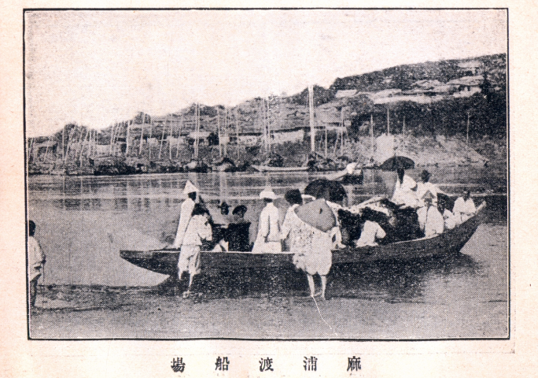
마포도선장(『京城繁昌記』,1915)
사진출처 : 서울역사아카이브
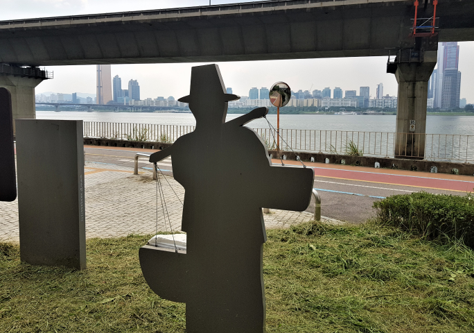
마포도선장(『京城繁昌記』,1915)
새우젓 거래로 유명했던 ‘서울 마포나루’
마포나루는 서울 마포구 마포동 한강변에 있었던 나루터이다. 조선시대 마포는 용산강 하류의 포구였고, 용산강은 서울의 남서방향 교통량이 많은 강 중 하나였다. 마포나루에는 각 지방에서 온 곡식, 새우젓 등 젓갈류가 모여들었고, 조선시대 말까지 전국의 배들이 새우젓을 싣고 드나들며 거래했다. 현재 마포나루 자리에는 마포대교가 있다.
구미의 강동과 강서를 연결하는 ‘구미 비산나루’
구미 비산나루터는 신라시대부터 물물교역의 요충지였으며, 근대부터 1985년까지 나룻배가 운영되고, 구미의 강동과 강서로 사람과 물자를 이어주었다. 2019년까지 비산나루의 역사와 문화를 알리기 위한 ‘비산나루터 문화축제＇가 개최되었다.
두 갈래 물이 모이는 ‘정선 아우라지’
정선 아우라지에는 윗마을과 아랫마을에 나루터가 있었다. 조선시대에는 경복궁 중건을 위해 정선지역의 소나무를 남한강을 따라 마포나루로 운반하던 뗏목터이기도 했다. 지금은 나루터의 모습은 사라졌지만, 이곳에는 강을 사이에 두고 서로 바라만 볼 수밖에 없었던 남녀의 사랑 설화가 전해 내려온다.
갑곶리와 육지를 이어주던 ‘강화 갑곶나루’
갑곶나루는 김포 월곶면과 강화 갑곶리를 연결하던 곳이다. 나루터 시설은 1419년 세종 때 만들어졌는데, 이 때 세워진 선착장 석축로는 현재도 남아있다. 정묘호란 때 인조가 건넜던 나루터로도 알려져 있다.
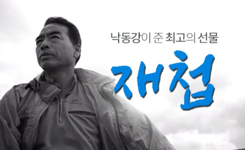
낙동강이 준 최고의 선물, 재첩
부산사상문화원
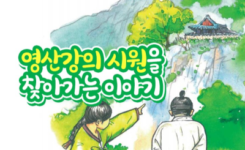
영산강의 시원을 찾아가는 이야기
담양문화원
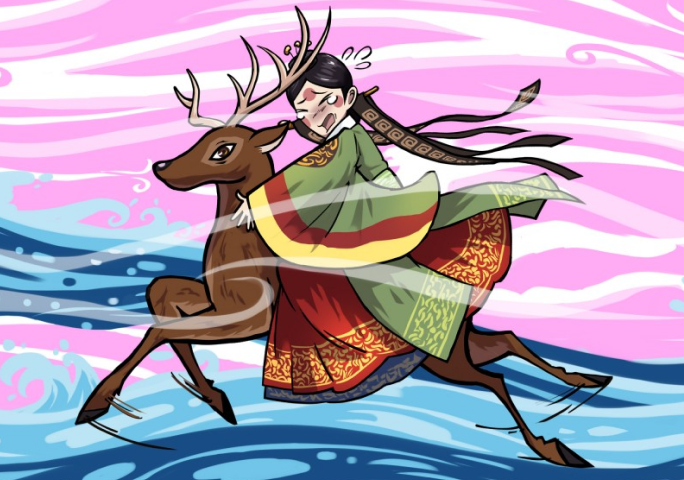
사슴뿔처럼 생긴 강이 흐르는 서울 월계동 녹천마을
사슴뿔처럼 생긴 강이 흐르는 서울 월계동 녹천마을
녹천마을은 중랑천과 우이천이 합쳐지는 강의 모습이 마치 사슴 머리에 난 뿔과 같다고 한 것에서 지명이 유래되었다. 녹천마을에는 사슴에게 시집 간 염씨 처녀를 기려 사슴 록(鹿)자를 써 냇물 이름을 ‘녹천’이라 지었다는 지명 설화가 내려온다.
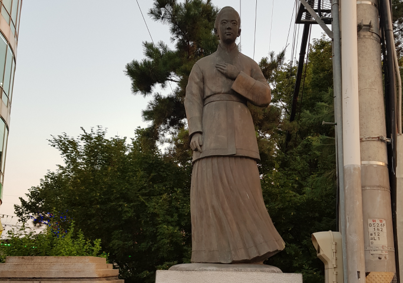
광진교 도미부인상
송파강에서 배를 타고 도망친 도미부인
서울시 송파구의 석촌호수는 원래부터 호수가 아니었다. 1971년부터 한강 본류에 해당하는 송파강(松坡江)을 매립하고 나서 생긴 호수다. 그 이전에는 송파나루터가 있었는데, 백제시대 때 송파나루터에서 도미부인이 도망쳤다는 설화가 전한다.
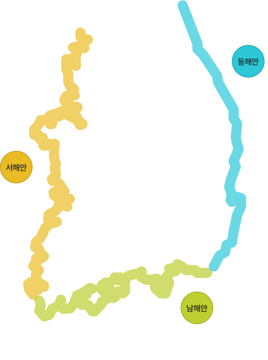
서해안
우리나라 갯벌의 80%가 분포하여 수산자원이 풍부하고 간척사업이 활발함
항만시설, 부두 등이 발달
조수간만 큼 / 복잡한 해안선
남해안
굴곡이 심한 리아스식 해안으로 천연항구의 조건을 갖추고 있음
수심이 얕고, 섬이 많음
조수간만 큼 / 복잡한 해안선
동해안
한류와 난류가 교차하여 황금어장을 형성하고 수심이 깊음
파랑의 퇴적 작용으로 호수, 석호가 발달
조수간만 적음 / 단순하고 직선 형태의 해안선
01
우리나라 갯벌
우리나라에는 서해안과 남해안에 넓은 갯벌이 있고, 특히 서해안에 전체 갯벌 2,482km²의 약 93.8%가 집중되어 있다.
시·도별로는 전남에 약 42.5%, 인천·경기 약 36.1%, 충남 약13.7%, 전북 약 4.4%, 경남·부산이 약 3.3%로 분포되어 있다.
서해안의 갯벌은 북해 연안, 아마존강 하구, 미국 동부, 캐나다 동부와 더불어 세계 5대 갯벌의 하나로 평가되었다.
자료출처: 해양수산부, 「 2018전국갯벌면적조사 」
02
유네스코 세계유산, 한국의 갯벌
2021년, 5개 지자체에 걸쳐있는 4개 갯벌(서천갯벌, 고창갯벌, 신안갯벌, 보성-순천 갯벌)이 ‘한국의 갯벌’이라는 명칭으로 유네스코 자연유산에 지정 되었다.
2150종의 동식물군과 118종의 철새가 서식하는 한국의 갯벌은 지구 생물다양성의 보존을 위해 매우 중요한 서식지이다.
다양한 생물의 서식을 위한 환경을 갖춘 한국의 갯벌은 ‘탁월한 보편적 가치가 인정’되어 유네스코 세계유산에 등재되었다.
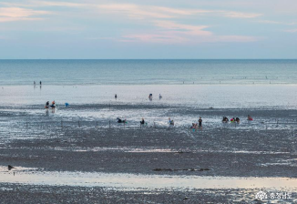
서천 갯벌
사진출처:충청남도
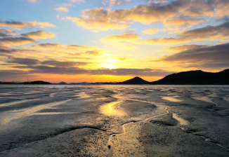
신안 갯벌
사진출처:신안군청
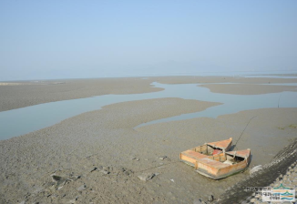
고창 갯벌
사진출처:디지털고창문화대전
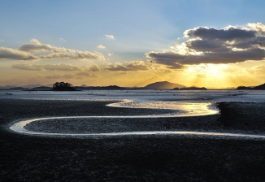
보성 순천 갯벌
사진출처:순천만습지 홈페이지
제주
해녀어업
[제주도 전역]
장치 없이 맨몸으로 잠수해 전복, 소라, 미역 등 해산물을 직업적으로 채취하는 전통적 어업방식으로 불턱, 해신당 등 세계적으로 희귀하고 독특한 문화적 가치 존재
보성
뻘배어업
남해
죽방렴어업
[지역. 경남 남해군 삼동~창선면 지족해협 일원]
삼국시대 이래 현재까지 어업인 생계수단으로서 자립적으로 운영되고 있는 한반도 유일의 함정어구를 사용한 어로방식으로, 자연의 순리를 거스르지 않는 대표적인 전통적 어업시스템
신안
천일염업
[지역. 전남 신안군 천일염전 일대]
바닷물을 염전으로 끌어들여 전통 기술과 노하우를 이용해 바람과 햇볕으로 수분만 증발시켜 소금을 생산하는 전통어업활동시스템국시대 이래 현재까지 어업인 생계수단으로서 자립적으로 운영되고 있는 한반도 유일의 함정어구를 사용한 어로방식으로, 자연의 순리를 거스르지 않는 대표적인 전통적 어업시스템
하동·광양 섬진강
재첩잡이 손틀어업
[지역. 하동군, 광양시 섬진강 하류 일원]
삼국시대 이래 현재까지 어업인 생계수단으로서 자립적으로 운영되고 있는 한반도 유일의 함정어구를 사용한 어로방식으로, 자연의 순리를 거스르지 않는 대표적인 전통적 어업시스템
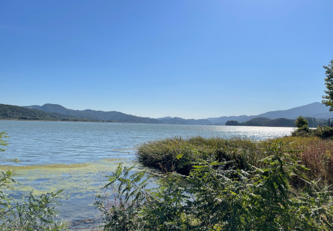
발원지강원도 태백시 금대봉의 검룡소
길이481km
‘크다, 넓다, 길다’라는 뜻을 가진 한강은 남한에서 가장 큰 강이자 한반도의 중앙에 위치한 강이다. 강원도 영월의 동강과 서강이 만나 남한강을 이루고, 금강산에서 흘러내린 북한강과 경기도 양평 두물머리에서 비로소 한강이 된다.
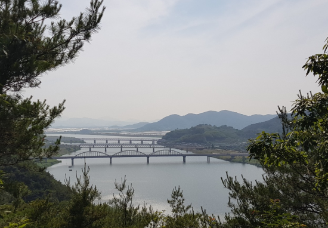
발원지강원도 태백시 황지연못
길이517km
남한에서 가장 긴 강인 낙동강은 북에서 남으로 흐르는 대표적인 강이다. 낙동강은 상주의 옛 이름인 낙양의 동쪽을 흐른다고 하여 붙여진 이름이다. 경상도 지역을 흐르는 낙동강 지역에는 선사시대부터 사람이 살았던 흔적이 남아있다.
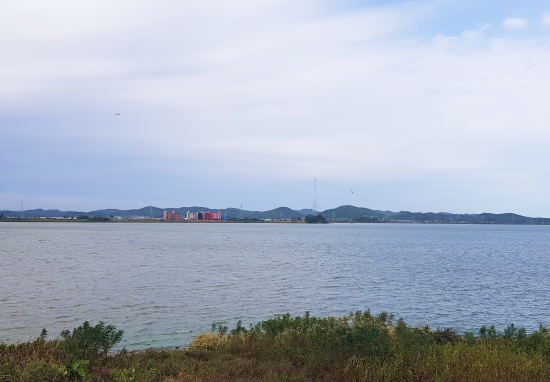
발원지전라북도 장수군 신무산 뜬봉샘
길이401km
전라북도 장수군 신무산의 뜬봉샘에서 시작하는 금강은 비단결 같은 물결을 자랑한다. 백제문화의 중심지로 일본에 백제문화를 전한 국제교류의 현장이기도 하다.
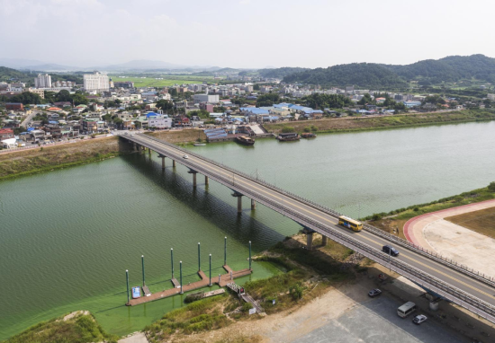
영산강_영산교
사진출처: 대한민국역사박물관
발원지전라북도 담양군 가맛골
길이115km
영산강은 목포에서 시작해서 나주까지 이어지는 긴 강으로 다양한 문화관광 자원이 풍부하다. 고대부터 물길과 바닷길의 왕래가 가장 활발했던 곳으로 완도 청해진, 삼별초, 신안 해저유물 등 활발했던 해상활동의 자취가 남아있다.
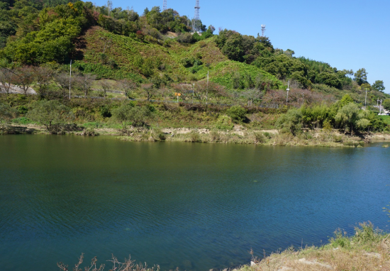
발원지전라북도 진안
길이212km
섬진강은 전북 진안에서 시작해 남해로 흘러 들어가는 우리나라 5대 강 중 가장 수질이 좋은 강이다. 모래가 많아 다사강(多沙江)이라고 부르기도 한다. 유일하게 하굿둑에 막혀있지 않은 열린 강이어서 6월이면 바다에서 겨울을 난 은어가 섬진강으로 돌아온다.